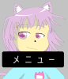
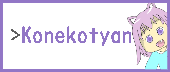

 トップページへ戻ります。
トップページへ戻ります。YouTubは主に、Minecraftやゲームをやっています。
 TwitterはYouTub情報や日常的なtweetもします。
TwitterはYouTub情報や日常的なtweetもします。Discordは雑談などを楽しむ場所です。
 コネコちゃんページ
トップページへ戻ります。 TwitterはYouTub情報や日常的なtweetもします。| アドオン名 | アドオン画像 | ダウンロード |
|---|---|---|
| 自動販売機アドオン | NO.png | 不可能 |
| 踏切アドオン | NO.png |
|
| 青のレッドストーン | NO.png | 不可能 |